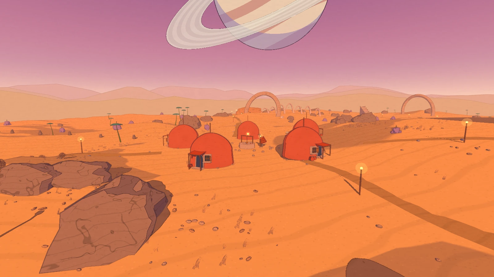

cwyf

一个世界，慢慢成形
沙海、圆顶小屋与神殿。
从远处的空间关系，到近处的材质和构件，
这些是同一工程里正在完善的场景。
走近一点
窗框的厚度，棚架的连接，梯子的落点。
看见迭代的差别
同一工程，同一机位。
保留原有暖色方向，继续调整形态、线稿与场景细节。


把方法留给下一次制作
Godot Moebius Rendering
一套受 Moebius 视觉语言启发的场景美术 skill。让 AI 代理依据你的工程，逐项检查模型形态、线稿、阴影与构件关系。
在可回退副本中修改，保留创作者已确定的色调、角色、玩法与声音。适合可编辑的 3D 工程；参考着色器基于 Godot 4 Forward+，需要按项目适配。
获取开源 Skill代码与文档采用 MIT 许可证。
在你的工程中使用
按仓库说明安装后，提供工程路径与目标画面，再明确需要保留的创作约束。
使用 $godot-moebius-rendering 检查我的 Godot 工程。 在测试副本中修改，保留当前色调、角色、玩法和声音。 先检查结构衔接与动态清晰度，再细化线稿和场景细节。 交付实机对照、连续运动检查与未解决项。